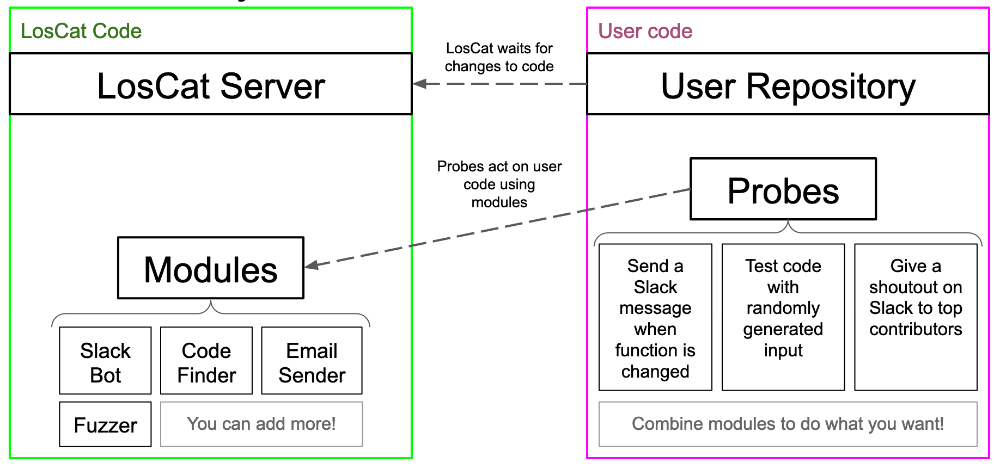

LosCat is a tool for source code monitoring developed by four students at Carleton College towards completion of their senior integrative exercise (colloquially known as "comps") for computer science. The aforementioned students are Anders Bruihler, Ari Conati, Sebastian Kimberk, and David White.
The objective of LosCat is to be a tool that allows actions to be automatically run on user code in order to improve the code development process. This is intentionally vague, as we have written LosCat so that it can be easily extended and used for a wide array of uses.
The tool monitors code in users' Github repositories by running "probes" that are written by the user (and held within their own repository). These "probes" make use of "modules" which are contained within the LosCat repository (which themselves are just bash scripts that are automatically populated).
We have written an assortment of modules for LosCat, which can be modified or added to by end users.
TODO
TODO
TODO
LosCat relies upon Github webhooks in order to know when a tracked Github repository has been updated. A user simply adds our webhook endpoint (for our server it's http://saad.sebastian.io/run) on Github and they're up and running! Github will send an HTTP POST request to the endpoint whenever the repository is pushed to.